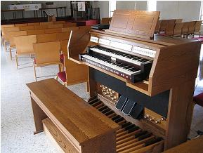

D.L. Simmons & Company Church Organs

USED ORGANS AND PARTS
FOR SALE - Britson D105
{kind=link}
FOR SALE - Britson D105 LRT

This organ is in like-new condition. Following a complete rebuild of the electronics, it has gone through six-months of testing, being played and powered on almost every day. Sold with a 15-day warranty if buyer is within a 100-mile radius of our shop. Johannus was the OEM for Britson Organs.
Price: $4900.
Contact us at phoenixorganssouth@gmail.com for more information / reference BritsonD105 in your email.
Price: $4900.
Contact us at phoenixorganssouth@gmail.com for more information / reference BritsonD105 in your email.
This organ is in like-new condition. Following a complete rebuild of the electronics, it has gone through six-months of testing, being played and powered on almost every day. Sold with a 15-day warranty if buyer is within a 100-mile radius of our shop. Johannus was the OEM for Britson Organs.
SOLD (check here often for more used organs)
Contact us at phoenixorganssouth@gmail.com for more information.
SOLD (check here often for more used organs)
Contact us at phoenixorganssouth@gmail.com for more information.
WEBSITE CONTENTS COPYRIGHT© 2015
DL SIMMONS & COMPANY CHURCH ORGANS
DL SIMMONS & COMPANY CHURCH ORGANS